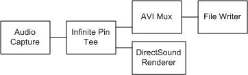

[The feature associated with this page, DirectShow, is a legacy feature. It has been superseded by MediaPlayer, IMFMediaEngine, and Audio/Video Capture in Media Foundation. Those features have been optimized for Windows 10 and Windows 11. Microsoft strongly recommends that new code use MediaPlayer, IMFMediaEngine and Audio/Video Capture in Media Foundation instead of DirectShow, when possible. Microsoft suggests that existing code that uses the legacy APIs be rewritten to use the new APIs if possible.]
The filter graph described in Creating an Audio Capture Graph performs capture only, with no preview. To preview and capture at the same time, the filter graph needs to use the Infinite Pin Tee Filter. This filter has one input pin and creates as many output pins as needed. (It starts with one output pin. Each time you connect an output pin, it creates another one.) The Infinite Pin Tee filter delivers every sample that it receives, unchanged, through all of its output pins.
Connect the Audio Capture Filter to the Infinite Pin Tee, and connect the Infinite Pin Tee to the multiplexer and the DirectSound Renderer Filter. Connect the multiplexer to the file writer, as before. The following diagram illustrates the resulting filter graph for an AVI file.

Because the DirectSound Renderer is the default audio renderer, you can simply call the IGraphBuilder::Render method on the Infinite Pin Tee's output pin. The Filter Graph Manager uses Intelligent Connect to create the renderer, add it to the filter graph, and connect the pins.
[!Note]
If you capture audio from a microphone and preview it from a speaker on the same computer, you might create audio feedback.
Â
Â
Â